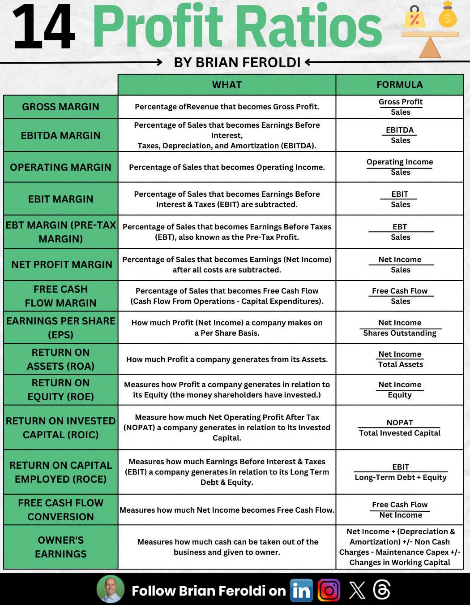

Udara dingin menusuk tulang ketika kabut mulai turun menyelimuti daerah Dago Atas, Bandung. Di sudut sebuah kedai kopi yang interiornya didominasi kayu pinus dan lampu kuning temaram, kami berempat berkumpul. Aku, Santoso, menatap rintik hujan yang berlomba-lomba turun di kaca jendela besar di samping mejaku. Di depanku, Esan sibuk mengaduk kopi hitamnya dengan ritme lambat, sementara Nase matanya tak lepas dari layar laptop yang menampilkan barisan kode dan angka yang seolah menari di hadapannya.
Tidak lama kemudian, langkah kaki cepat terdengar. Tessa meletakkan sebuah map tebal di atas meja kami. Sebagai sesama mahasiswa Teknik Industri, kami sadar betul bahwa ilmu kami tidak hanya berkutat pada optimalisasi lantai produksi, tata letak pabrik, atau ergonomi sistem kerja. Ujung tombak dari semua efisiensi teknis yang kami pelajari selalu bermuara pada satu hal: profitabilitas perusahaan.
Tessa menarik napas panjang, merapikan rambutnya yang sedikit basah karena gerimis. "Aku menemukan ringkasan yang luar biasa. Ini adalah kerangka kerja komprehensif dari Brian Feroldi. Empat belas rasio profitabilitas yang harus kita integrasikan ke dalam algoritma analisis pasar kita."
Ia mengeluarkan selembar kertas yang dicetak berwarna dan meletakkannya tepat di tengah-tengah meja, menggeser cangkir kopi Esan sedikit ke samping.

Esan mencondongkan tubuhnya, memicingkan mata melihat daftar panjang tersebut. "Empat belas? Apa tidak tumpang tindih? Kita biasa memakai beberapa saja untuk studi kelayakan industri."
Nase mengalihkan pandangannya dari layar laptop. "Justru di sinilah seninya, Esan. Setiap rasio menceritakan bagian yang berbeda dari siklus hidup uang di dalam perusahaan. Mari kita bedah satu per satu, aku akan menyiapkan modul kalkulasinya di backend."
Aku mengangguk setuju. "Mari kita bahas secara detail. Mulai dari baris paling atas, top line menuju bottom line, lalu ke efisiensi modal dan kas."
Tessa menunjuk ke baris pertama berwarna hijau. "Gross Margin. Secara sederhana, ini adalah persentase dari pendapatan yang menjadi laba kotor. Ini mengukur seberapa efisien perusahaan memproduksi barang atau jasanya sebelum biaya-biaya operasional dihitung."
"Dalam konteks teknik industri," ujarku, "ini adalah area di mana ilmu kita paling terasa dampaknya. Laba kotor didapat dari Penjualan dikurangi Harga Pokok Penjualan (HPP). Jika kita bisa melakukan optimasi pada material, mengurangi waste atau cacat produk dengan Six Sigma, HPP akan turun. Ketika HPP turun, Gross Profit naik."
Esan menambahkan, "Benar, Santoso. Kalau sebuah perusahaan manufaktur memiliki Gross Margin yang terus menyusut, itu pertanda merah. Entah harga bahan bakunya sedang meroket, atau efisiensi produksi di lantai pabrik sedang hancur. Perusahaan dengan Gross Margin tinggi memiliki ruang bernapas yang lebih lega untuk mendanai operasional lainnya."
Nase mengetik beberapa baris kode dan berujar, "Selanjutnya kita masuk ke EBITDA Margin. Persentase dari penjualan yang menjadi Earnings Before Interest, Taxes, Depreciation, and Amortization."
"Kenapa kita butuh mengecualikan depresiasi dan amortisasi?" tanya Tessa retoris, memancing diskusi. "Sebagai orang teknik, kita tahu bahwa pabrik butuh investasi alat berat, mesin CNC, robotika, yang nilainya menyusut setiap tahun. Biaya penyusutan ini adalah biaya non-kas."
"Tepat," kataku menanggapi. "EBITDA sering digunakan untuk membandingkan profitabilitas antar perusahaan di industri yang sama tetapi dengan struktur permodalan dan umur aset yang berbeda. Ini memberi kita gambaran kasar mengenai kas yang dihasilkan langsung dari operasi inti, mengabaikan kebijakan akuntansi untuk penyusutan mesin dan bangunan."
Kertas itu kini sedikit bergeser ke arah Esan. "Lalu ada Operating Margin. Persentase dari penjualan yang menjadi Pendapatan Operasional (Operating Income)."
Tessa menjelaskan dengan antusias, "Operating Income itu didapat setelah laba kotor dikurangi seluruh beban operasional seperti gaji karyawan kantor, biaya pemasaran, dan riset pengembangan (R&D). Ini menunjukkan seberapa lihai manajemen mengelola biaya di luar lantai pabrik."
"Ini metrik krusial," sahut Nase. "Sebuah startup mungkin punya Gross Margin yang spektakuler karena biaya produksi software sangat rendah. Namun, jika mereka membakar uang gila-gilaan untuk iklan dan gaji direksi, Operating Margin-nya akan negatif. Ini adalah cerminan sesungguhnya dari model bisnis yang berkelanjutan."
Aku melihat rasio berikutnya. "EBIT Margin. Persentase penjualan yang menjadi Earnings Before Interest and Taxes."
"Apa bedanya secara signifikan dengan Operating Income?" tanya Esan sambil mengerutkan kening. "Di banyak perusahaan, angkanya sering kali sama, kan?"
"Sering kali sama, namun tidak selalu," jawab Nase. "Operating Income fokus murni pada operasi inti. EBIT bisa mencakup pendapatan atau beban non-operasional sebelum bunga dan pajak. Misalnya, pendapatan dari investasi sampingan. EBIT Margin sangat penting bagi investor karena menunjukkan kemampuan perusahaan menghasilkan laba sebelum negara (pajak) dan kreditor (bunga) mengambil jatah mereka."
Tessa melanjutkan jarinya ke bawah. "Sekarang kita masukkan elemen bunga pinjaman. Pre-Tax Margin atau EBT Margin. Persentase penjualan yang menjadi Earnings Before Taxes."
"Ini mulai menarik untuk analisis struktur permodalan kita," ujarku. "Sebagai engineer yang mendesain sistem manufaktur baru, kita sering harus memutuskan apakah akan mendanai mesin baru dengan modal sendiri (ekuitas) atau meminjam ke bank (utang). Jika kita meminjam, beban bunga akan menggerus EBIT menjadi EBT. Rasio ini memberitahu kita seberapa besar beban hutang mencekik margin profitabilitas perusahaan sebelum dipotong pajak negara."
Hujan di luar semakin deras, namun kehangatan diskusi kami semakin terasa. "Dan inilah rajanya margin," kata Esan sambil tersenyum. "Net Profit Margin. Persentase penjualan yang benar-benar tersisa sebagai laba bersih setelah semua komponen biaya, termasuk bunga dan pajak, dikurangkan."
Nase mengetik kencang. "Ini adalah angka yang paling sering dilihat publik. Berapa sen yang berhasil dipertahankan perusahaan dari setiap rupiah penjualan. Margin bersih yang konsisten di atas 10% di industri yang ketat menunjukkan adanya keunggulan kompetitif (economic moat) yang luar biasa kuat."
"Tapi ingat," Tessa mengingatkan dengan nada serius. "Net income adalah produk dari akuntansi akrual. Laba bersih bisa dengan mudah dimanipulasi melalui berbagai kebijakan akuntansi. Laba di atas kertas belum tentu wujudnya berupa uang tunai di bank."
"Tepat sekali, Tessa! Itulah mengapa baris berikutnya sangat krusial," kataku dengan penuh semangat. "Free Cash Flow Margin. Persentase penjualan yang menjadi Free Cash Flow (FCF)."
Nase langsung mengambil alih panggung. "Kas adalah raja. Free Cash Flow adalah Arus Kas dari Operasi dikurangi Pengeluaran Modal (Capital Expenditures / Capex). Kalau sebuah perusahaan melaporkan Net Profit Margin yang besar tapi FCF Margin-nya negatif, kita harus curiga. Ke mana uangnya pergi?"
"Biasanya lari ke Capex," sambung Esan. "Di industri berat, beli mesin baru, bangun pabrik. Laba bersih terlihat bagus karena pembelian pabrik tidak langsung memotong laba (hanya disusutkan), tapi kas aslinya sudah terbang keluar untuk membayar kontraktor. FCF Margin menunjukkan seberapa efisien bisnis tersebut mengubah penjualannya menjadi uang tunai nyata yang bebas digunakan untuk ekspansi, bayar dividen, atau melunasi utang."
Kami beralih ke blok berikutnya dalam gambar tersebut. "Earnings Per Share," gumam Tessa membaca bagian berwarna hijau terang.
"Berapa banyak laba yang dihasilkan perusahaan untuk setiap lembar saham yang beredar," aku menjelaskan. "Ini adalah rasio jembatan antara total perusahaan dan porsi kepemilikan individu. EPS sangat penting karena menjadi dasar perhitungan rasio valuasi seperti Price-to-Earnings (P/E)."
Nase menambahkan catatan kritisnya, "Namun kita harus hati-hati. Manajemen bisa saja mendongkrak EPS tanpa benar-benar meningkatkan laba bersih. Caranya? Melakukan buyback atau pembelian kembali saham. Ketika jumlah saham beredar (denominator) mengecil, EPS otomatis naik. Ini bukan hal buruk, namun analis yang cerdas tak boleh hanya tertipu oleh kenaikan EPS tanpa melihat dari mana asalnya."
"Sekarang kita masuk ke ranah pengembalian atau Returns," kata Tessa. Ia menunjuk ke ROA. "Berapa banyak laba yang dihasilkan perusahaan dari total asetnya."
Esan, yang selalu berpikir dari sudut pandang manajer produksi, mengangguk antusias. "Ini rasio favoritku. Bayangkan kita punya pabrik bernilai miliaran rupiah (aset). ROA mengukur seberapa keras bangunan dan mesin-mesin tersebut bekerja menghasilkan uang. Jika ROA rendah, berarti kita punya banyak aset yang idle (menganggur) atau tidak dioptimalkan dengan baik. Dalam filosofi teknik industri, ini adalah bentuk inefisiensi yang harus diberantas!"
"Lalu di bawahnya ada ROE," kataku. "Mengukur berapa laba yang dihasilkan perusahaan terkait dengan ekuitas atau uang yang telah diinvestasikan oleh para pemegang saham."
"ROE adalah kompas bagi pemegang saham," jelas Nase. "Jika saya menaruh uang 100 juta di perusahaan ini, berapa laba bersih yang dihasilkan dari uang tersebut setiap tahun? Namun, ROE punya satu kelemahan besar. Perusahaan bisa mendongkrak ROE dengan mengambil banyak hutang. Karena Ekuitas = Aset - Hutang, maka semakin tinggi hutang, ekuitas semakin kecil. Denominator mengecil, ROE meroket. Perusahaan seolah-olah berkinerja luar biasa, padahal risiko kebangkrutannya meningkat tajam."
Tessa tersenyum penuh arti. "Di sinilah ROIC masuk untuk menyelamatkan kita dari manipulasi utang pada ROE. Return on Invested Capital. Ini metrik yang mengukur seberapa efisien perusahaan mengalokasikan modal di bawah kendalinya untuk menghasilkan operasi yang menguntungkan."
"NOPAT adalah Net Operating Profit After Tax," selaku. "Ini adalah laba operasi riil dari perusahaan seandainya perusahaan tersebut tidak memiliki utang sama sekali. Dibandingkan dengan Total Invested Capital (modal dari pemegang saham ditambah utang berbunga). ROIC adalah standar emas dari profitabilitas. Jika ROIC perusahaan konsisten di atas Biaya Modal (WACC), itu artinya perusahaan tersebut benar-benar menciptakan nilai fundamental. Sebagai lulusan IE yang merancang sistem investasi di lantai produksi, jika proyeksi ROIC kita lebih rendah dari biaya bunga bank, proyek itu lebih baik dibatalkan."
Esan menyipitkan mata. "Tunggu, di bawahnya ada ROCE. Apa bedanya dengan ROIC?"
"Mereka sangat mirip," jawab Nase. "ROCE menggunakan EBIT sebagai pembilangnya, bukan NOPAT (yang sudah dipotong pajak). Penyebutnya juga lebih spesifik ke Hutang Jangka Panjang dan Ekuitas. ROCE sangat berguna terutama dalam sektor padat modal seperti industri telekomunikasi atau utilitas untuk mengevaluasi profitabilitas dari proyek jangka panjang yang mereka jalankan."
Hujan di luar mulai mereda, menyisakan hawa dingin yang menyegarkan pikiran. Kopi kami sudah tinggal setengah. Tessa menunjuk ke rasio nomor 13.
"Free Cash Flow Conversion. Mengukur seberapa banyak Net Income yang benar-benar berubah menjadi Free Cash Flow."
"Ini adalah pendeteksi kebohongan paling mutakhir di dunia finansial," kataku dengan nada dramatis. "Banyak eksekutif korporat membual tentang Net Income yang tumbuh dua digit. Tetapi, jika FCF Conversion-nya jauh di bawah 1 (atau di bawah 100%), kita wajib bertanya-tanya. Berarti laba bersih itu hanya angka di atas kertas—mungkin pelanggan membeli dengan kredit panjang sehingga piutang menumpuk, atau persediaan barang tidak laku terjual menumpuk di gudang. Kasnya tidak pernah masuk ke brankas."
"Secara logis, perusahaan yang sehat, mapan, dan luar biasa hebat seharusnya memiliki FCF Conversion di atas 100%," timpal Nase. "Karena depresiasi mengurangi laba bersih tetapi tidak mengurangi kas aktual."
Kami sampai pada baris terakhir. Baris yang paling panjang dan memuat nama tokoh legendaris secara tersirat.
Esan membacanya perlahan. "Owner's Earnings. Mengukur berapa banyak uang kas yang bisa ditarik keluar dari bisnis dan diberikan kepada pemiliknya tanpa merusak kemampuan kompetitif bisnis tersebut."
"Ini adalah formula yang dipopulerkan oleh Warren Buffett dalam suratnya kepada pemegang saham Berkshire Hathaway tahun 1986," terang Tessa. Matanya berbinar, memancarkan kecintaannya pada riset mendalam. "Buffett menganggap laba bersih itu cacat. Ia menciptakan Owner's Earnings untuk mencari 'nilai intrinsik' sebuah bisnis."
"Mari kita bedah sebagai orang teknik," ujarku. "Kita ambil Laba Bersih. Lalu kita tambahkan kembali Depresiasi dan Amortisasi, karena itu biaya masa lalu, bukan uang kas yang keluar tahun ini. Begitu pula biaya non-kas lainnya."
Nase menyela, "Bagian krusialnya ada pada 'Maintenance Capex'. Capex itu ada dua jenis: Growth Capex (untuk ekspansi bikin pabrik baru) dan Maintenance Capex (untuk merawat mesin lama agar operasi tidak hancur). Buffett mengatakan kita harus mengurangkan Maintenance Capex saja, karena pengeluaran ini mutlak diperlukan agar posisi kompetitif perusahaan tidak mundur. Sayangnya, data Maintenance Capex jarang ditulis eksplisit di laporan keuangan, jadi kita harus mengestimasi sendiri."
"Lalu diakhiri dengan perubahan modal kerja (Working Capital)," kata Esan menyimpulkan. "Jika perusahaan butuh menambah persediaan besar-besaran tahun ini, itu akan mengikat kas kas keluar, sehingga harus dikurangkan dari Owner's Earnings."
Kami berempat terdiam sejenak. Suara gemerisik mesin espresso di belakang barista memecah keheningan meja kami. Empat belas rasio ini bukan sekadar angka matematis yang mati. Mereka adalah cerita tentang manusia, tentang manajer yang membuat keputusan, tentang insinyur yang merancang mesin, dan tentang darah yang memompa jantung perekonomian.
Tessa melipat kembali kertas tersebut dengan rapi. "Sebuah studi komprehensif yang indah. Ini akan melengkapi algoritma penilai kualitas ekonomi Indonesia yang sedang kita kembangkan."
Nase menutup laptopnya sambil tersenyum puas. "Aku sudah memetakan semua rumusnya di repository. Deploy ke Vercel malam ini?"
"Tentu saja," jawabku. "Mari selesaikan kopi ini, jalanan Dago sudah menunggu."
Kami memahami, sebagai anak muda terdidik dari Bandung yang melek data, bahwa fondasi dari setiap analisa sistem operasional tak akan pernah utuh tanpa menerjemahkannya ke dalam bahasa universal dunia: profitabilitas uang kas.